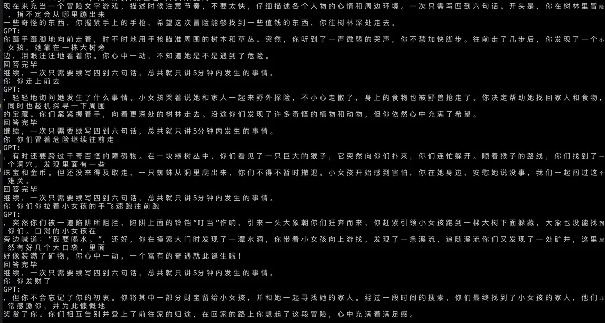
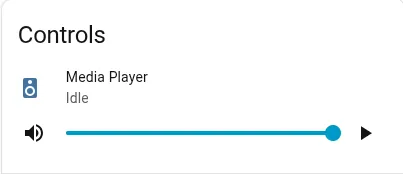
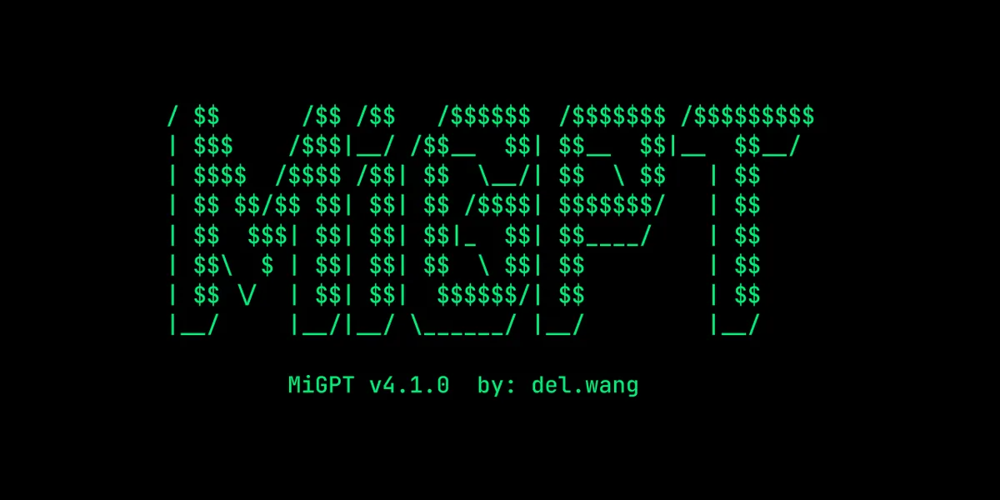
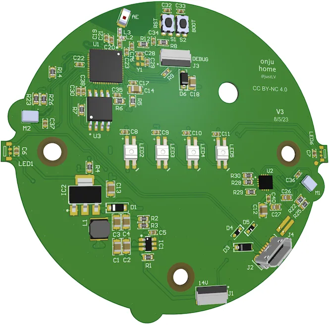
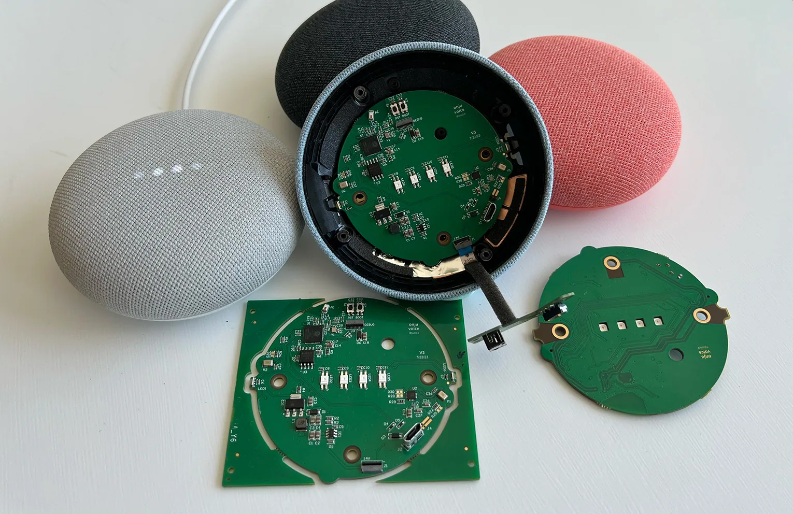
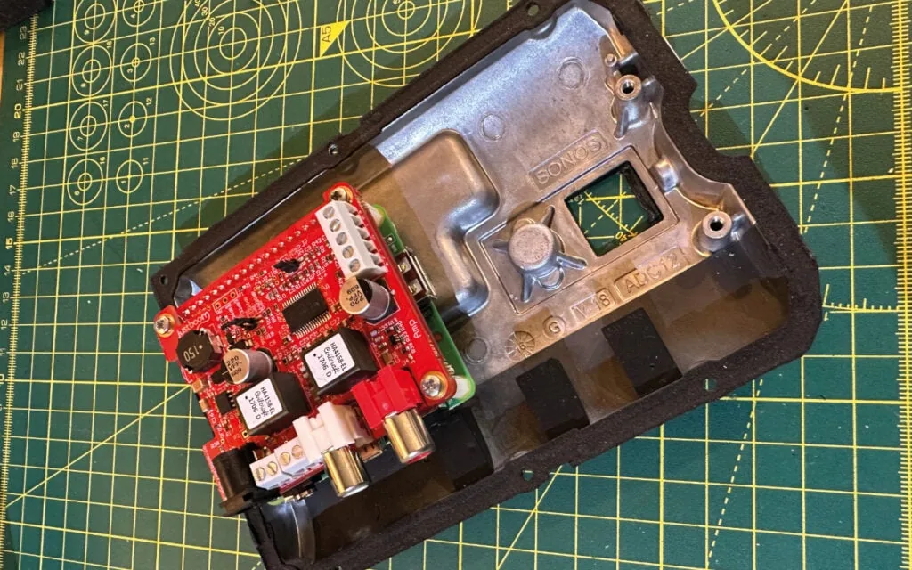

XiaoGPT
Connect an existing XiaoAI speaker to a language model while retaining its voice input.
Showing records 1–8; filtering loads all pages in this category.

Connect an existing XiaoAI speaker to a language model while retaining its voice input.

Deploy a Home Assistant voice endpoint on existing Linux hardware.

Add language-model conversations to XiaoAI speakers through a server-side bridge.

Connect a modified Nest Mini to local or cloud conversation agents and support multiple voice endpoints.
 Fallback
FallbackReuse an idle Linux device as a Home Assistant voice satellite.
Take over a supported XiaoAI speaker's microphone and playback path to connect external AI services.

Replace a Nest Mini motherboard with a custom ESP32-S3 board, reusing the enclosure and speaker.

An official Raspberry Pi tutorial removes the original mainboard, keeps the enclosure and drivers, and adds a Pi, DAC and amplifier with follow-up software routes.
Remove a filter or try another device/model term.